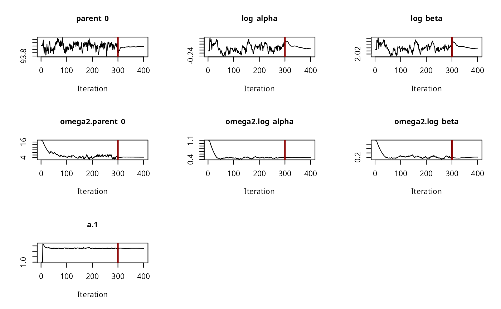
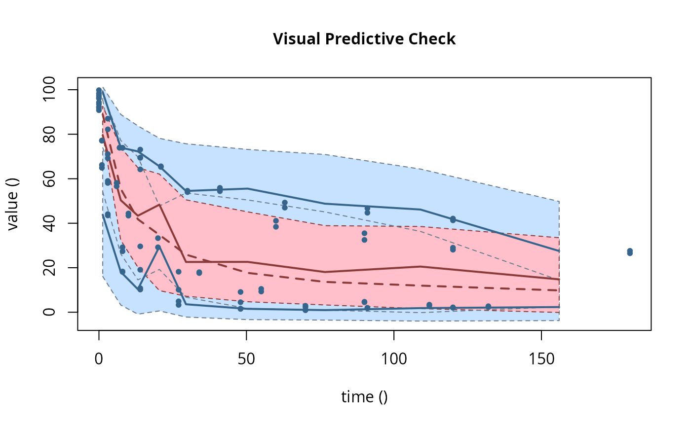
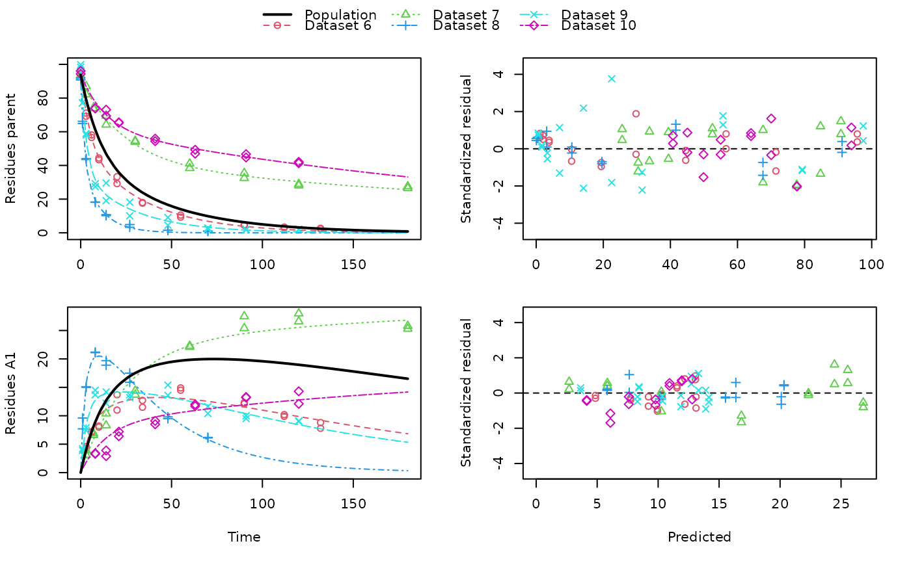

This function uses saemix::saemix() as a backend for fitting nonlinear mixed
effects models created from mmkin row objects using the Stochastic Approximation
Expectation Maximisation algorithm (SAEM).
saem(object, ...)
# S3 method for mmkin
saem(
object,
transformations = c("mkin", "saemix"),
degparms_start = numeric(),
test_log_parms = TRUE,
conf.level = 0.6,
solution_type = "auto",
nbiter.saemix = c(300, 100),
control = list(displayProgress = FALSE, print = FALSE, nbiter.saemix = nbiter.saemix,
save = FALSE, save.graphs = FALSE),
fail_with_errors = TRUE,
verbose = FALSE,
quiet = FALSE,
...
)
# S3 method for saem.mmkin
print(x, digits = max(3, getOption("digits") - 3), ...)
saemix_model(
object,
solution_type = "auto",
transformations = c("mkin", "saemix"),
degparms_start = numeric(),
test_log_parms = FALSE,
conf.level = 0.6,
verbose = FALSE,
...
)
saemix_data(object, verbose = FALSE, ...)An mmkin row object containing several fits of the same mkinmod model to different datasets
Further parameters passed to saemix::saemixModel.
Per default, all parameter transformations are done in mkin. If this argument is set to 'saemix', parameter transformations are done in 'saemix' for the supported cases. Currently this is only supported in cases where the initial concentration of the parent is not fixed, SFO or DFOP is used for the parent and there is either no metabolite or one.
Parameter values given as a named numeric vector will be used to override the starting values obtained from the 'mmkin' object.
If TRUE, an attempt is made to use more robust starting values for population parameters fitted as log parameters in mkin (like rate constants) by only considering rate constants that pass the t-test when calculating mean degradation parameters using mean_degparms.
Possibility to adjust the required confidence level for parameter that are tested if requested by 'test_log_parms'.
Possibility to specify the solution type in case the automatic choice is not desired
Convenience option to increase the number of iterations
Passed to saemix::saemix.
Should a failure to compute standard errors from the inverse of the Fisher Information Matrix be a failure?
Should we print information about created objects of type saemix::SaemixModel and saemix::SaemixData?
Should we suppress the messages saemix prints at the beginning and the end of the optimisation process?
An saem.mmkin object to print
Number of digits to use for printing
An S3 object of class 'saem.mmkin', containing the fitted saemix::SaemixObject as a list component named 'so'. The object also inherits from 'mixed.mmkin'. An saemix::SaemixModel object. An saemix::SaemixData object.
An mmkin row object is essentially a list of mkinfit objects that have been obtained by fitting the same model to a list of datasets using mkinfit.
Starting values for the fixed effects (population mean parameters, argument
psi0 of saemix::saemixModel() are the mean values of the parameters found
using mmkin.
# \dontrun{
ds <- lapply(experimental_data_for_UBA_2019[6:10],
function(x) subset(x$data[c("name", "time", "value")]))
names(ds) <- paste("Dataset", 6:10)
f_mmkin_parent_p0_fixed <- mmkin("FOMC", ds,
state.ini = c(parent = 100), fixed_initials = "parent", quiet = TRUE)
f_saem_p0_fixed <- saem(f_mmkin_parent_p0_fixed)
f_mmkin_parent <- mmkin(c("SFO", "FOMC", "DFOP"), ds, quiet = TRUE)
f_saem_sfo <- saem(f_mmkin_parent["SFO", ])
f_saem_fomc <- saem(f_mmkin_parent["FOMC", ])
f_saem_dfop <- saem(f_mmkin_parent["DFOP", ])
# The returned saem.mmkin object contains an SaemixObject, therefore we can use
# functions from saemix
library(saemix)
#> Loading required package: npde
#> Package saemix, version 3.0
#> please direct bugs, questions and feedback to emmanuelle.comets@inserm.fr
#>
#> Attaching package: ‘saemix’
#> The following objects are masked from ‘package:npde’:
#>
#> kurtosis, skewness
compare.saemix(f_saem_sfo$so, f_saem_fomc$so, f_saem_dfop$so)
#> Likelihoods calculated by importance sampling
#> AIC BIC
#> 1 624.2598 622.3070
#> 2 467.8664 465.1324
#> 3 493.9811 490.4660
plot(f_saem_fomc$so, plot.type = "convergence")

plot(f_saem_fomc$so, plot.type = "individual.fit")
plot(f_saem_fomc$so, plot.type = "npde")
#> Simulating data using nsim = 1000 simulated datasets
#> Computing WRES and npde .
#> Please use npdeSaemix to obtain VPC and npde
plot(f_saem_fomc$so, plot.type = "vpc")

f_mmkin_parent_tc <- update(f_mmkin_parent, error_model = "tc")
f_saem_fomc_tc <- saem(f_mmkin_parent_tc["FOMC", ])
compare.saemix(f_saem_fomc$so, f_saem_fomc_tc$so)
#> Likelihoods calculated by importance sampling
#> AIC BIC
#> 1 467.8664 465.1324
#> 2 469.9096 466.7851
sfo_sfo <- mkinmod(parent = mkinsub("SFO", "A1"),
A1 = mkinsub("SFO"))
#> Temporary DLL for differentials generated and loaded
fomc_sfo <- mkinmod(parent = mkinsub("FOMC", "A1"),
A1 = mkinsub("SFO"))
#> Temporary DLL for differentials generated and loaded
dfop_sfo <- mkinmod(parent = mkinsub("DFOP", "A1"),
A1 = mkinsub("SFO"))
#> Temporary DLL for differentials generated and loaded
# The following fit uses analytical solutions for SFO-SFO and DFOP-SFO,
# and compiled ODEs for FOMC that are much slower
f_mmkin <- mmkin(list(
"SFO-SFO" = sfo_sfo, "FOMC-SFO" = fomc_sfo, "DFOP-SFO" = dfop_sfo),
ds, quiet = TRUE)
# saem fits of SFO-SFO and DFOP-SFO to these data take about five seconds
# each on this system, as we use analytical solutions written for saemix.
# When using the analytical solutions written for mkin this took around
# four minutes
f_saem_sfo_sfo <- saem(f_mmkin["SFO-SFO", ])
f_saem_dfop_sfo <- saem(f_mmkin["DFOP-SFO", ])
# We can use print, plot and summary methods to check the results
print(f_saem_dfop_sfo)
#> Kinetic nonlinear mixed-effects model fit by SAEM
#> Structural model:
#> d_parent/dt = - ((k1 * g * exp(-k1 * time) + k2 * (1 - g) * exp(-k2 *
#> time)) / (g * exp(-k1 * time) + (1 - g) * exp(-k2 * time)))
#> * parent
#> d_A1/dt = + f_parent_to_A1 * ((k1 * g * exp(-k1 * time) + k2 * (1 - g)
#> * exp(-k2 * time)) / (g * exp(-k1 * time) + (1 - g) *
#> exp(-k2 * time))) * parent - k_A1 * A1
#>
#> Data:
#> 170 observations of 2 variable(s) grouped in 5 datasets
#>
#> Likelihood computed by importance sampling
#> AIC BIC logLik
#> 842 836.9 -408
#>
#> Fitted parameters:
#> estimate lower upper
#> parent_0 93.7701 91.1458 96.3945
#> log_k_A1 -5.8116 -7.5998 -4.0234
#> f_parent_qlogis -0.9608 -1.3654 -0.5562
#> log_k1 -2.5841 -3.6876 -1.4805
#> log_k2 -3.5228 -5.3254 -1.7203
#> g_qlogis -0.1027 -0.8719 0.6665
#> a.1 1.8856 1.6676 2.1037
#> SD.parent_0 2.7682 0.7668 4.7695
#> SD.log_k_A1 1.7447 0.4047 3.0848
#> SD.f_parent_qlogis 0.4525 0.1620 0.7431
#> SD.log_k1 1.2423 0.4560 2.0285
#> SD.log_k2 2.0390 0.7601 3.3180
#> SD.g_qlogis 0.4439 -0.3069 1.1947
plot(f_saem_dfop_sfo)

summary(f_saem_dfop_sfo, data = TRUE)
#> saemix version used for fitting: 3.0
#> mkin version used for pre-fitting: 1.1.0
#> R version used for fitting: 4.2.1
#> Date of fit: Thu Jun 30 10:23:53 2022
#> Date of summary: Thu Jun 30 10:23:53 2022
#>
#> Equations:
#> d_parent/dt = - ((k1 * g * exp(-k1 * time) + k2 * (1 - g) * exp(-k2 *
#> time)) / (g * exp(-k1 * time) + (1 - g) * exp(-k2 * time)))
#> * parent
#> d_A1/dt = + f_parent_to_A1 * ((k1 * g * exp(-k1 * time) + k2 * (1 - g)
#> * exp(-k2 * time)) / (g * exp(-k1 * time) + (1 - g) *
#> exp(-k2 * time))) * parent - k_A1 * A1
#>
#> Data:
#> 170 observations of 2 variable(s) grouped in 5 datasets
#>
#> Model predictions using solution type analytical
#>
#> Fitted in 8.85 s
#> Using 300, 100 iterations and 10 chains
#>
#> Variance model: Constant variance
#>
#> Mean of starting values for individual parameters:
#> parent_0 log_k_A1 f_parent_qlogis log_k1 log_k2
#> 93.8102 -5.3734 -0.9711 -1.8799 -4.2708
#> g_qlogis
#> 0.1356
#>
#> Fixed degradation parameter values:
#> None
#>
#> Results:
#>
#> Likelihood computed by importance sampling
#> AIC BIC logLik
#> 842 836.9 -408
#>
#> Optimised parameters:
#> est. lower upper
#> parent_0 93.7701 91.1458 96.3945
#> log_k_A1 -5.8116 -7.5998 -4.0234
#> f_parent_qlogis -0.9608 -1.3654 -0.5562
#> log_k1 -2.5841 -3.6876 -1.4805
#> log_k2 -3.5228 -5.3254 -1.7203
#> g_qlogis -0.1027 -0.8719 0.6665
#>
#> Correlation:
#> parnt_0 lg_k_A1 f_prnt_ log_k1 log_k2
#> log_k_A1 -0.0160
#> f_parent_qlogis -0.0263 0.0612
#> log_k1 0.0100 -0.0014 -0.0033
#> log_k2 0.0131 0.0050 -0.0011 0.0071
#> g_qlogis -0.0419 -0.0199 0.0026 -0.0765 -0.0707
#>
#> Random effects:
#> est. lower upper
#> SD.parent_0 2.7682 0.7668 4.7695
#> SD.log_k_A1 1.7447 0.4047 3.0848
#> SD.f_parent_qlogis 0.4525 0.1620 0.7431
#> SD.log_k1 1.2423 0.4560 2.0285
#> SD.log_k2 2.0390 0.7601 3.3180
#> SD.g_qlogis 0.4439 -0.3069 1.1947
#>
#> Variance model:
#> est. lower upper
#> a.1 1.886 1.668 2.104
#>
#> Backtransformed parameters:
#> est. lower upper
#> parent_0 93.770115 9.115e+01 96.39447
#> k_A1 0.002993 5.005e-04 0.01789
#> f_parent_to_A1 0.276720 2.034e-01 0.36443
#> k1 0.075467 2.503e-02 0.22753
#> k2 0.029516 4.867e-03 0.17902
#> g 0.474353 2.949e-01 0.66073
#>
#> Resulting formation fractions:
#> ff
#> parent_A1 0.2767
#> parent_sink 0.7233
#>
#> Estimated disappearance times:
#> DT50 DT90 DT50back DT50_k1 DT50_k2
#> parent 14.56 58.26 17.54 9.185 23.48
#> A1 231.62 769.41 NA NA NA
#>
#> Data:
#> ds name time observed predicted residual std standardized
#> Dataset 6 parent 0 97.2 95.78623 1.41377 1.886 0.749758
#> Dataset 6 parent 0 96.4 95.78623 0.61377 1.886 0.325498
#> Dataset 6 parent 3 71.1 71.34666 -0.24666 1.886 -0.130812
#> Dataset 6 parent 3 69.2 71.34666 -2.14666 1.886 -1.138429
#> Dataset 6 parent 6 58.1 56.49768 1.60232 1.886 0.849749
#> Dataset 6 parent 6 56.6 56.49768 0.10232 1.886 0.054262
#> Dataset 6 parent 10 44.4 44.53511 -0.13511 1.886 -0.071650
#> Dataset 6 parent 10 43.4 44.53511 -1.13511 1.886 -0.601974
#> Dataset 6 parent 20 33.3 29.77451 3.52549 1.886 1.869656
#> Dataset 6 parent 20 29.2 29.77451 -0.57451 1.886 -0.304675
#> Dataset 6 parent 34 17.6 19.32540 -1.72540 1.886 -0.915023
#> Dataset 6 parent 34 18.0 19.32540 -1.32540 1.886 -0.702894
#> Dataset 6 parent 55 10.5 10.42781 0.07219 1.886 0.038282
#> Dataset 6 parent 55 9.3 10.42781 -1.12781 1.886 -0.598107
#> Dataset 6 parent 90 4.5 3.74190 0.75810 1.886 0.402037
#> Dataset 6 parent 90 4.7 3.74190 0.95810 1.886 0.508102
#> Dataset 6 parent 112 3.0 1.96485 1.03515 1.886 0.548966
#> Dataset 6 parent 112 3.4 1.96485 1.43515 1.886 0.761096
#> Dataset 6 parent 132 2.3 1.09395 1.20605 1.886 0.639596
#> Dataset 6 parent 132 2.7 1.09395 1.60605 1.886 0.851726
#> Dataset 6 A1 3 4.3 4.72702 -0.42702 1.886 -0.226458
#> Dataset 6 A1 3 4.6 4.72702 -0.12702 1.886 -0.067361
#> Dataset 6 A1 6 7.0 7.51314 -0.51314 1.886 -0.272128
#> Dataset 6 A1 6 7.2 7.51314 -0.31314 1.886 -0.166063
#> Dataset 6 A1 10 8.2 9.63719 -1.43719 1.886 -0.762179
#> Dataset 6 A1 10 8.0 9.63719 -1.63719 1.886 -0.868244
#> Dataset 6 A1 20 11.0 11.84931 -0.84931 1.886 -0.450409
#> Dataset 6 A1 20 13.7 11.84931 1.85069 1.886 0.981468
#> Dataset 6 A1 34 11.5 12.82336 -1.32336 1.886 -0.701808
#> Dataset 6 A1 34 12.7 12.82336 -0.12336 1.886 -0.065418
#> Dataset 6 A1 55 14.9 12.89456 2.00544 1.886 1.063533
#> Dataset 6 A1 55 14.5 12.89456 1.60544 1.886 0.851403
#> Dataset 6 A1 90 12.1 11.55919 0.54081 1.886 0.286806
#> Dataset 6 A1 90 12.3 11.55919 0.74081 1.886 0.392871
#> Dataset 6 A1 112 9.9 10.42334 -0.52334 1.886 -0.277539
#> Dataset 6 A1 112 10.2 10.42334 -0.22334 1.886 -0.118442
#> Dataset 6 A1 132 8.8 9.37987 -0.57987 1.886 -0.307519
#> Dataset 6 A1 132 7.8 9.37987 -1.57987 1.886 -0.837844
#> Dataset 7 parent 0 93.6 90.95702 2.64298 1.886 1.401639
#> Dataset 7 parent 0 92.3 90.95702 1.34298 1.886 0.712217
#> Dataset 7 parent 3 87.0 84.77506 2.22494 1.886 1.179942
#> Dataset 7 parent 3 82.2 84.77506 -2.57506 1.886 -1.365616
#> Dataset 7 parent 7 74.0 77.60962 -3.60962 1.886 -1.914268
#> Dataset 7 parent 7 73.9 77.60962 -3.70962 1.886 -1.967301
#> Dataset 7 parent 14 64.2 67.50646 -3.30646 1.886 -1.753499
#> Dataset 7 parent 14 69.5 67.50646 1.99354 1.886 1.057221
#> Dataset 7 parent 30 54.0 52.48909 1.51091 1.886 0.801271
#> Dataset 7 parent 30 54.6 52.48909 2.11091 1.886 1.119465
#> Dataset 7 parent 60 41.1 39.54372 1.55628 1.886 0.825335
#> Dataset 7 parent 60 38.4 39.54372 -1.14372 1.886 -0.606542
#> Dataset 7 parent 90 32.5 33.87968 -1.37968 1.886 -0.731676
#> Dataset 7 parent 90 35.5 33.87968 1.62032 1.886 0.859298
#> Dataset 7 parent 120 28.1 30.41071 -2.31071 1.886 -1.225427
#> Dataset 7 parent 120 29.0 30.41071 -1.41071 1.886 -0.748135
#> Dataset 7 parent 180 26.5 25.36386 1.13614 1.886 0.602524
#> Dataset 7 parent 180 27.6 25.36386 2.23614 1.886 1.185881
#> Dataset 7 A1 3 3.9 2.74863 1.15137 1.886 0.610600
#> Dataset 7 A1 3 3.1 2.74863 0.35137 1.886 0.186341
#> Dataset 7 A1 7 6.9 5.92686 0.97314 1.886 0.516081
#> Dataset 7 A1 7 6.6 5.92686 0.67314 1.886 0.356983
#> Dataset 7 A1 14 10.4 10.38800 0.01200 1.886 0.006362
#> Dataset 7 A1 14 8.3 10.38800 -2.08800 1.886 -1.107320
#> Dataset 7 A1 30 14.4 16.93529 -2.53529 1.886 -1.344524
#> Dataset 7 A1 30 13.7 16.93529 -3.23529 1.886 -1.715751
#> Dataset 7 A1 60 22.1 22.33044 -0.23044 1.886 -0.122209
#> Dataset 7 A1 60 22.3 22.33044 -0.03044 1.886 -0.016144
#> Dataset 7 A1 90 27.5 24.42300 3.07700 1.886 1.631809
#> Dataset 7 A1 90 25.4 24.42300 0.97700 1.886 0.518127
#> Dataset 7 A1 120 28.0 25.51140 2.48860 1.886 1.319768
#> Dataset 7 A1 120 26.6 25.51140 1.08860 1.886 0.577313
#> Dataset 7 A1 180 25.8 26.80282 -1.00282 1.886 -0.531818
#> Dataset 7 A1 180 25.3 26.80282 -1.50282 1.886 -0.796981
#> Dataset 8 parent 0 91.9 91.08733 0.81267 1.886 0.430980
#> Dataset 8 parent 0 90.8 91.08733 -0.28733 1.886 -0.152377
#> Dataset 8 parent 1 64.9 67.55332 -2.65332 1.886 -1.407123
#> Dataset 8 parent 1 66.2 67.55332 -1.35332 1.886 -0.717701
#> Dataset 8 parent 3 43.5 41.65811 1.84189 1.886 0.976800
#> Dataset 8 parent 3 44.1 41.65811 2.44189 1.886 1.294994
#> Dataset 8 parent 8 18.3 19.65773 -1.35773 1.886 -0.720038
#> Dataset 8 parent 8 18.1 19.65773 -1.55773 1.886 -0.826103
#> Dataset 8 parent 14 10.2 10.65118 -0.45118 1.886 -0.239269
#> Dataset 8 parent 14 10.8 10.65118 0.14882 1.886 0.078925
#> Dataset 8 parent 27 4.9 3.11694 1.78306 1.886 0.945601
#> Dataset 8 parent 27 3.3 3.11694 0.18306 1.886 0.097082
#> Dataset 8 parent 48 1.6 0.43165 1.16835 1.886 0.619603
#> Dataset 8 parent 48 1.5 0.43165 1.06835 1.886 0.566570
#> Dataset 8 parent 70 1.1 0.05441 1.04559 1.886 0.554503
#> Dataset 8 parent 70 0.9 0.05441 0.84559 1.886 0.448438
#> Dataset 8 A1 1 9.6 7.66431 1.93569 1.886 1.026546
#> Dataset 8 A1 1 7.7 7.66431 0.03569 1.886 0.018930
#> Dataset 8 A1 3 15.0 15.57948 -0.57948 1.886 -0.307311
#> Dataset 8 A1 3 15.1 15.57948 -0.47948 1.886 -0.254279
#> Dataset 8 A1 8 21.2 20.38988 0.81012 1.886 0.429625
#> Dataset 8 A1 8 21.1 20.38988 0.71012 1.886 0.376593
#> Dataset 8 A1 14 19.7 20.16439 -0.46439 1.886 -0.246276
#> Dataset 8 A1 14 18.9 20.16439 -1.26439 1.886 -0.670535
#> Dataset 8 A1 27 17.5 16.40918 1.09082 1.886 0.578489
#> Dataset 8 A1 27 15.9 16.40918 -0.50918 1.886 -0.270030
#> Dataset 8 A1 48 9.5 10.12011 -0.62011 1.886 -0.328861
#> Dataset 8 A1 48 9.8 10.12011 -0.32011 1.886 -0.169764
#> Dataset 8 A1 70 6.2 5.79080 0.40920 1.886 0.217011
#> Dataset 8 A1 70 6.1 5.79080 0.30920 1.886 0.163979
#> Dataset 9 parent 0 99.8 97.38786 2.41214 1.886 1.279218
#> Dataset 9 parent 0 98.3 97.38786 0.91214 1.886 0.483731
#> Dataset 9 parent 1 77.1 79.25431 -2.15431 1.886 -1.142481
#> Dataset 9 parent 1 77.2 79.25431 -2.05431 1.886 -1.089449
#> Dataset 9 parent 3 59.0 55.69866 3.30134 1.886 1.750781
#> Dataset 9 parent 3 58.1 55.69866 2.40134 1.886 1.273489
#> Dataset 9 parent 8 27.4 31.64893 -4.24893 1.886 -2.253314
#> Dataset 9 parent 8 29.2 31.64893 -2.44893 1.886 -1.298729
#> Dataset 9 parent 14 19.1 22.57316 -3.47316 1.886 -1.841901
#> Dataset 9 parent 14 29.6 22.57316 7.02684 1.886 3.726507
#> Dataset 9 parent 27 10.1 14.11345 -4.01345 1.886 -2.128430
#> Dataset 9 parent 27 18.2 14.11345 4.08655 1.886 2.167199
#> Dataset 9 parent 48 4.5 6.95586 -2.45586 1.886 -1.302400
#> Dataset 9 parent 48 9.1 6.95586 2.14414 1.886 1.137093
#> Dataset 9 parent 70 2.3 3.31753 -1.01753 1.886 -0.539619
#> Dataset 9 parent 70 2.9 3.31753 -0.41753 1.886 -0.221424
#> Dataset 9 parent 91 2.0 1.63642 0.36358 1.886 0.192816
#> Dataset 9 parent 91 1.8 1.63642 0.16358 1.886 0.086751
#> Dataset 9 parent 120 2.0 0.61667 1.38333 1.886 0.733614
#> Dataset 9 parent 120 2.2 0.61667 1.58333 1.886 0.839679
#> Dataset 9 A1 1 4.2 3.67247 0.52753 1.886 0.279763
#> Dataset 9 A1 1 3.9 3.67247 0.22753 1.886 0.120666
#> Dataset 9 A1 3 7.4 8.36240 -0.96240 1.886 -0.510385
#> Dataset 9 A1 3 7.9 8.36240 -0.46240 1.886 -0.245223
#> Dataset 9 A1 8 14.5 12.80590 1.69410 1.886 0.898422
#> Dataset 9 A1 8 13.7 12.80590 0.89410 1.886 0.474162
#> Dataset 9 A1 14 14.2 13.99625 0.20375 1.886 0.108053
#> Dataset 9 A1 14 12.2 13.99625 -1.79625 1.886 -0.952596
#> Dataset 9 A1 27 13.7 14.22730 -0.52730 1.886 -0.279641
#> Dataset 9 A1 27 13.2 14.22730 -1.02730 1.886 -0.544803
#> Dataset 9 A1 48 13.6 13.33713 0.26287 1.886 0.139406
#> Dataset 9 A1 48 15.4 13.33713 2.06287 1.886 1.093991
#> Dataset 9 A1 70 10.4 11.84008 -1.44008 1.886 -0.763708
#> Dataset 9 A1 70 11.6 11.84008 -0.24008 1.886 -0.127318
#> Dataset 9 A1 91 10.0 10.30732 -0.30732 1.886 -0.162980
#> Dataset 9 A1 91 9.5 10.30732 -0.80732 1.886 -0.428142
#> Dataset 9 A1 120 9.1 8.33981 0.76019 1.886 0.403149
#> Dataset 9 A1 120 9.0 8.33981 0.66019 1.886 0.350117
#> Dataset 10 parent 0 96.1 93.70349 2.39651 1.886 1.270926
#> Dataset 10 parent 0 94.3 93.70349 0.59651 1.886 0.316342
#> Dataset 10 parent 8 73.9 77.86253 -3.96253 1.886 -2.101429
#> Dataset 10 parent 8 73.9 77.86253 -3.96253 1.886 -2.101429
#> Dataset 10 parent 14 69.4 70.18665 -0.78665 1.886 -0.417182
#> Dataset 10 parent 14 73.1 70.18665 2.91335 1.886 1.545019
#> Dataset 10 parent 21 65.6 64.03245 1.56755 1.886 0.831308
#> Dataset 10 parent 21 65.3 64.03245 1.26755 1.886 0.672210
#> Dataset 10 parent 41 55.9 54.71491 1.18509 1.886 0.628480
#> Dataset 10 parent 41 54.4 54.71491 -0.31491 1.886 -0.167007
#> Dataset 10 parent 63 47.0 49.63436 -2.63436 1.886 -1.397065
#> Dataset 10 parent 63 49.3 49.63436 -0.33436 1.886 -0.177319
#> Dataset 10 parent 91 44.7 45.08853 -0.38853 1.886 -0.206049
#> Dataset 10 parent 91 46.7 45.08853 1.61147 1.886 0.854600
#> Dataset 10 parent 120 42.1 41.07653 1.02347 1.886 0.542772
#> Dataset 10 parent 120 41.3 41.07653 0.22347 1.886 0.118513
#> Dataset 10 A1 8 3.3 4.08295 -0.78295 1.886 -0.415218
#> Dataset 10 A1 8 3.4 4.08295 -0.68295 1.886 -0.362186
#> Dataset 10 A1 14 3.9 6.04367 -2.14367 1.886 -1.136841
#> Dataset 10 A1 14 2.9 6.04367 -3.14367 1.886 -1.667165
#> Dataset 10 A1 21 6.4 7.59693 -1.19693 1.886 -0.634761
#> Dataset 10 A1 21 7.2 7.59693 -0.39693 1.886 -0.210502
#> Dataset 10 A1 41 9.1 9.86436 -0.76436 1.886 -0.405361
#> Dataset 10 A1 41 8.5 9.86436 -1.36436 1.886 -0.723555
#> Dataset 10 A1 63 11.7 10.99397 0.70603 1.886 0.374425
#> Dataset 10 A1 63 12.0 10.99397 1.00603 1.886 0.533522
#> Dataset 10 A1 91 13.3 11.91274 1.38726 1.886 0.735696
#> Dataset 10 A1 91 13.2 11.91274 1.28726 1.886 0.682663
#> Dataset 10 A1 120 14.3 12.66519 1.63481 1.886 0.866981
#> Dataset 10 A1 120 12.1 12.66519 -0.56519 1.886 -0.299733
# The following takes about 6 minutes
#f_saem_dfop_sfo_deSolve <- saem(f_mmkin["DFOP-SFO", ], solution_type = "deSolve",
# control = list(nbiter.saemix = c(200, 80), nbdisplay = 10))
#saemix::compare.saemix(list(
# f_saem_dfop_sfo$so,
# f_saem_dfop_sfo_deSolve$so))
# If the model supports it, we can also use eigenvalue based solutions, which
# take a similar amount of time
#f_saem_sfo_sfo_eigen <- saem(f_mmkin["SFO-SFO", ], solution_type = "eigen",
# control = list(nbiter.saemix = c(200, 80), nbdisplay = 10))
# }